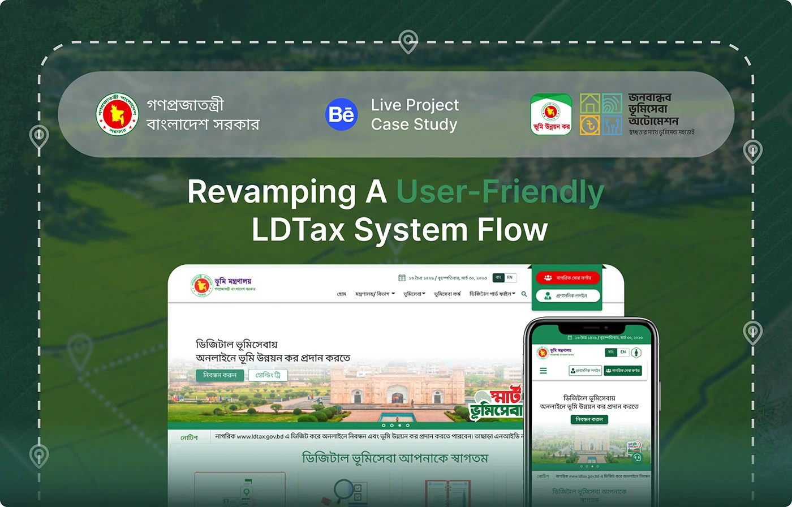
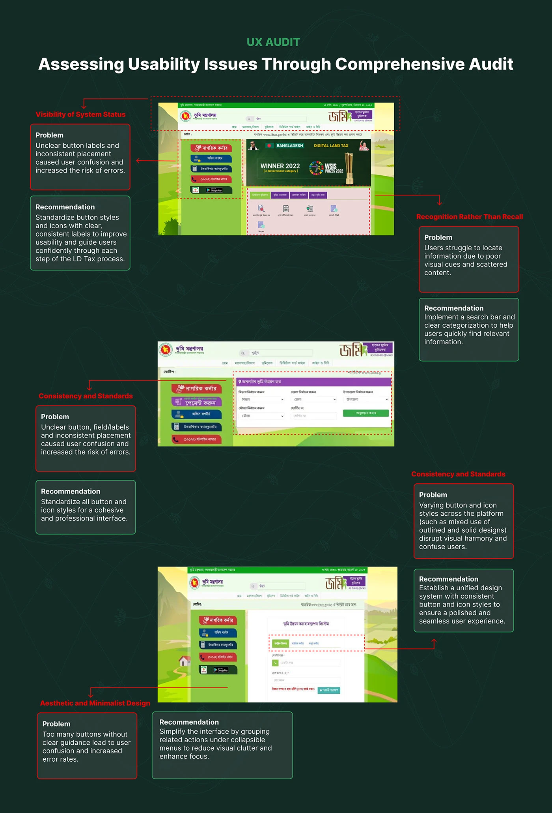
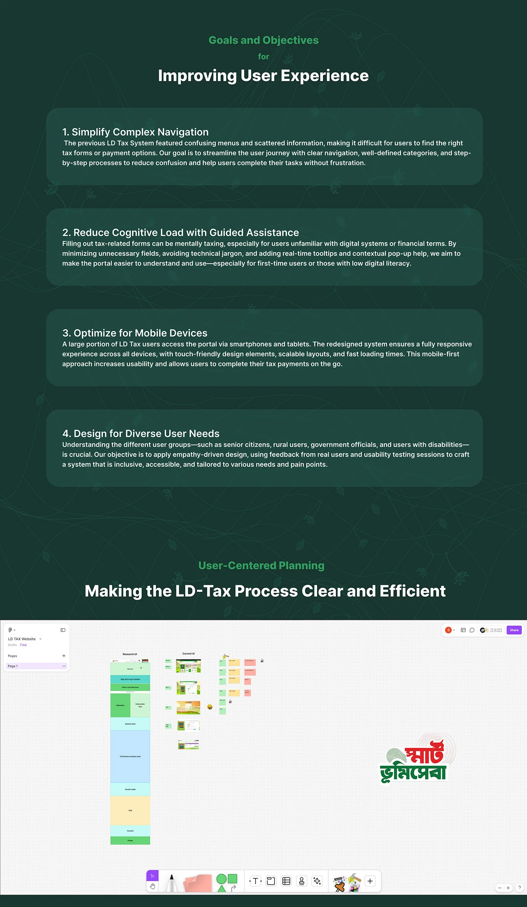
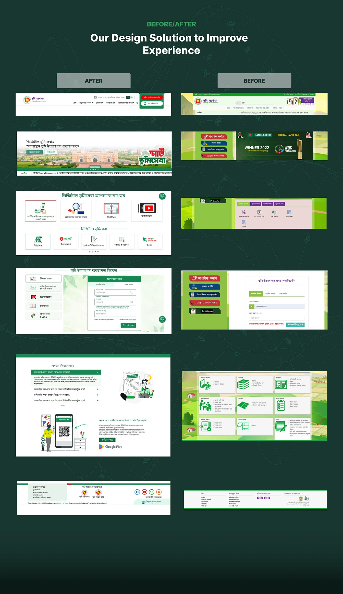
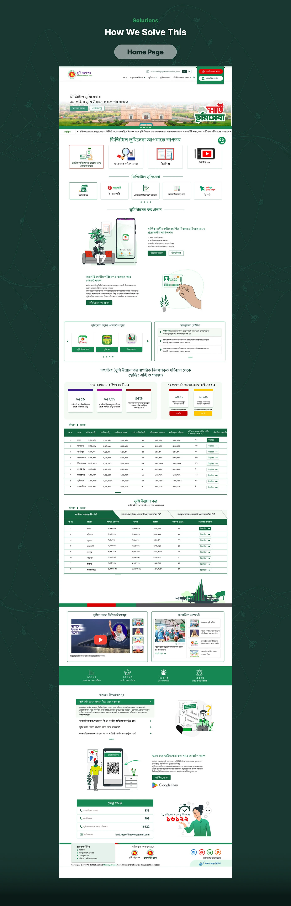
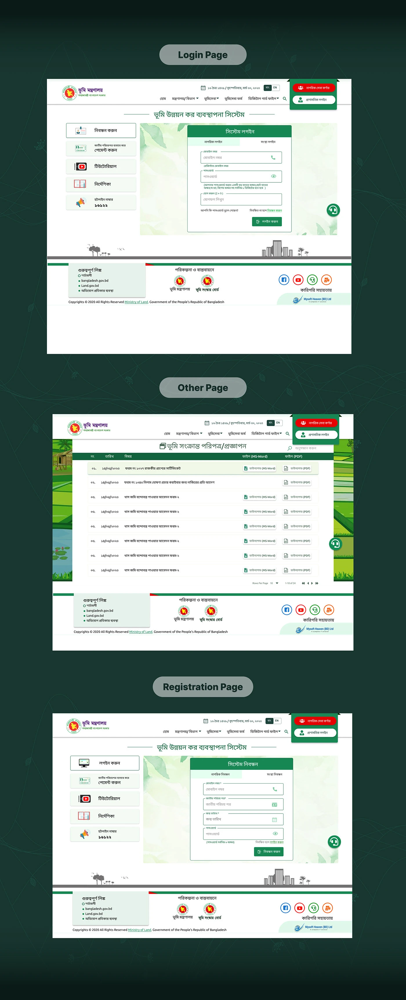
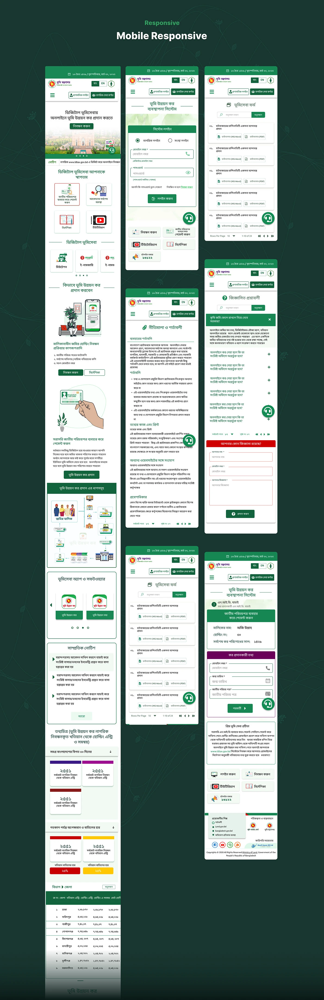
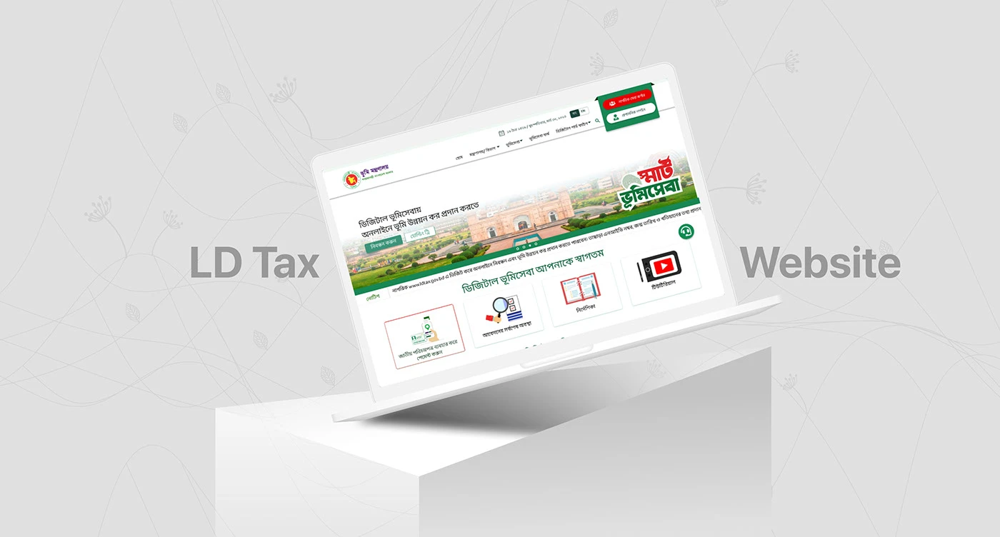

Government · Public portal · Mysoft Heaven
LD-Tax Portal
The front door of Bangladesh's land development tax service — the home page, login and registration a citizen meets before the LD-Tax system itself — rebuilt so the way in is obvious.

- Role
- UI/UX Designer — UX audit, research, information architecture and UI
- Duration
- 2023–2024
- Platform
- Responsive public website
- Client
- Ministry of Land, Government of Bangladesh
- Tools
- Figma, FigJam, Photoshop, Illustrator, Google Forms, Google Sheets
01The problem
Before anyone can pay land tax online, they have to get through the portal: find the right entry point, register with a National ID, and log in. The old portal made that first step the hardest one.
It was an illustrated green landscape with a stack of differently coloured buttons down one side, an award banner where the main action should be, and services scattered across icon grids. It worked poorly on phones. People with limited digital experience got confused or stuck, which meant delayed payments and abandoned registrations.
02What it had to do
- Simplify navigation — clear categories and step-by-step paths to the right form or payment.
- Cut cognitive load — fewer fields, plain language, and help in context for first-time users.
- Work on mobile — a large share of visitors arrive on a phone or tablet.
- Serve every kind of visitor — older citizens, rural users, government officials and people with disabilities.
03The audit
I audited the live portal against usability heuristics and wrote a recommendation for each problem:
- Visibility of system status — button labels were unclear and placed inconsistently. Fix: one button style, with clear labels.
- Recognition rather than recall — content was scattered with weak visual cues. Fix: a search bar and clear categories.
- Consistency and standards — outlined and solid buttons and icons were mixed across pages. Fix: a single design system.
- Aesthetic and minimalist design — too many buttons with no guidance. Fix: group related actions and remove clutter.
Planning happened in FigJam: the current pages on one side, and the proposed page structure — banner, sign-up and login, other land services, statistics, FAQ, contact — on the other.


04The redesign
The main action comes first. The hero now says what the site is for — pay land development tax online — with Register as the primary button. Citizen and admin logins sit together in one fixed place in the header.
Four shortcuts replace the button stack. Pay with a National ID, check an application's status, read the guide, or watch the tutorial. The other digital land services follow in a single labelled row.
Login and registration share one layout. The form is in the middle, with the same help links beside it on both pages: payment by NID, tutorial, guide and the 16122 hotline.
Help is always on the page. An FAQ, a help desk block with phone numbers, and a support button that stays in view. The home page also carries notices, payment statistics by district, and a QR code for the mobile app.
One visual system. Noto Serif Bengali and the
flag-green palette (#12633D, #198754), the
same system used inside the LD-Tax system,
so the portal and the product behind it feel like one service.





05Credit
UX and UI for the Land Ministry's land management automation project, with Mysoft Heaven as technical partner. Published on Behance.
Parliament Documentation
A secure internal document system for the Bangladesh Parliament Secretariat.
Say hello
Happy to walk through this project, or any of the others, on a call.